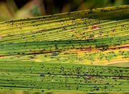

PLANT LEAF DISEASE PREDICTION AND PESTICIDE RECOMMENDATION

Disease Type
Leaf Smut
Symptoms
- From a distance, infected turf appears clumpy and patchy, due to the killing of individual plants and the more upright growth of infected plants.
- Smutted plants are most evident in the spring and fall when they appear pale-green to slightly yellow or brown, stunted, and more erect than healthy plants.
- Single plants may be affected, and irregular patches up to 1 foot or more in diameter may occur.
- Narrow, yellow-green streaks develop between the veins. These streaks turn silvery to dull gray and extend the entire length of the leaf blade and sheath.
Management
- Leaf smuts are less common in the U.S due to the widespread use of resistant varieties in blends and mixes.
- Thus, the best control strategy is to renovate and overseed infected turf with a blend or mixture of several highly resistant varieties.
- Maintain a balanced fertility level based on soil tests; spring and summer applications of nitrogen can enhance smut severity.
- Yearly treatment with a systemic fungicide is expensive, but when done properly, will eradicate the pathogens from within the grass hosts.
- Drench the fungicide into the soil in late fall, just before winter dormancy, or at green-up in the early spring.
Home
Predict